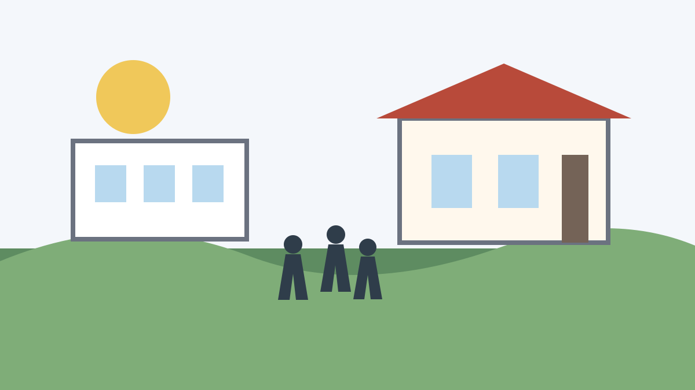
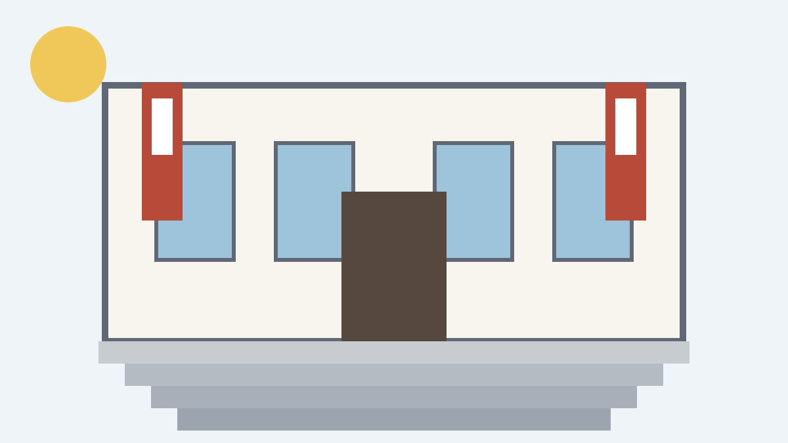

Students cross the campus green between morning classes.

The library entrance provides a central meeting place for study groups.
The student center hosts events, dining, and organization fairs.
Slide 1 of 3